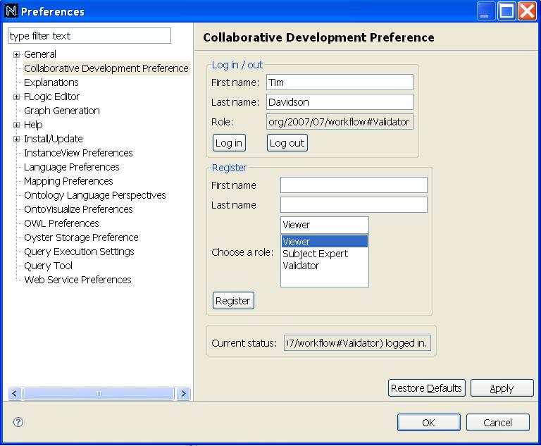

User Document
Collaborative Development Preference:
1. You could find this preference page by following these steps in NeOn Toolkit: Window --> Preferences -->Collaborative Development Preference.
2. If you are a new user, you could do registration in the "Register" part by filling in your first name and last name and choosing a role for yourself. Then you can click the button of "Register". If there is a person who has the same first name and last name as yours, you need to use a different first name or last name. Otherwise, you will be registered and log in automatically.
3. If you have registered already, you could log in the "Log in /out" area by inputting your first name and last name.

Figure 1. The page of Collaborative Development Preference.